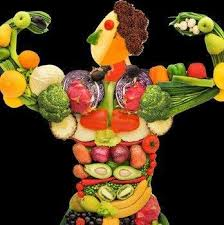
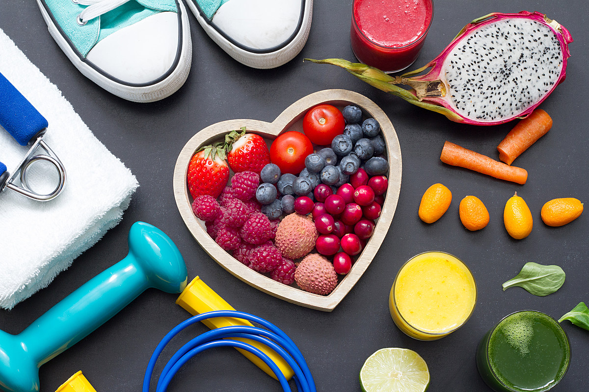
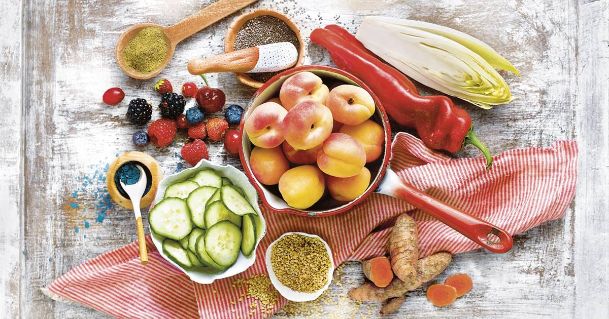
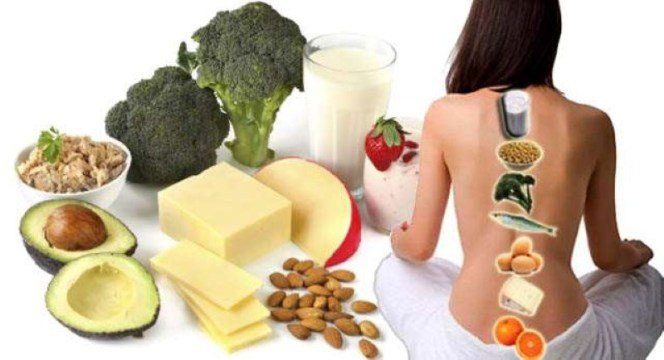
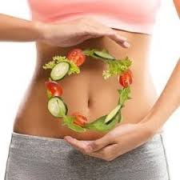
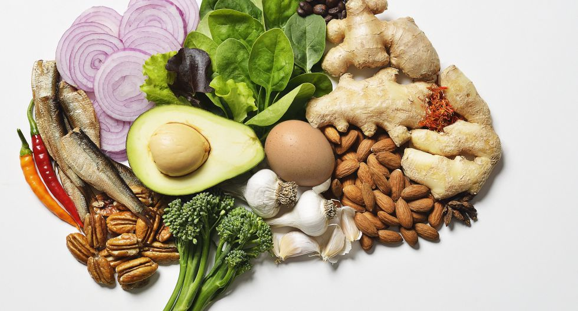
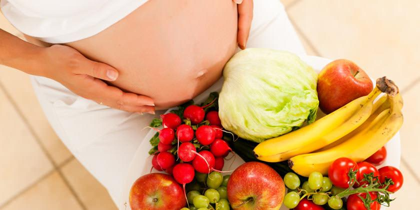
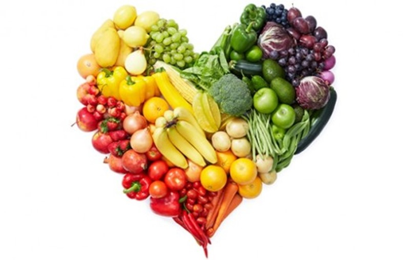
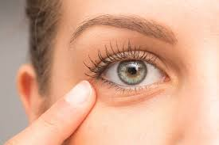

12 Beneficios de una buena alimentación
- Te mantiene fuerte  Comer alimentos ricos en nutrientes y proteínas es fundamental para mantener los músculos fuertes. Por su parte, tanto a la vitamina D como a muchas de las B también se les atribuye propiedades que favorecen el aporte de energía.
- Protege tu sistema inmunitario  El sistema inmunitario es la base de la salud. Su misión es protegerte de todo aquello potencialmente dañino, como virus y bacterias, atacándolos cuando entran en tu cuerpo.
- Mantiene sana la piel  La piel es el órgano más grande de tu cuerpo y por tanto debes cuidarlo. Consumir vitaminas está asociado a la reducción de posibilidades de desarrollar cáncer de piel.
- Previene la osteoporosis  Si quieres unos huesos fuertes, los productos lácteos, el pescado, las frutas y las verduras son indispensables en tu cesta de la compra. Mantener la sal a raya también puede ayudar en su prevención.
- Regula el tránsito intestinal  Las frutas, las verduras y los productos lácteos ricos en probióticos son siempre bien recibidos por las bacterias del tracto digestivo. Por su parte, los alimentos grasos y fritos no son nada recomendables.
- Mejora tu estado de ánimo Está comprobado que existen alimentos que contribuyen a mejorar tu estado de ánimo. La razón es que ayudan al organismo a segregar ciertas hormonas (endorfinas, serotonina) que provocan sensación de felicidad y bienestar. Cuidar tu alimentación te ayudará a paliar algunos de los efectos asociados a épocas algo complicadas para las defensas del organismo, como son la primavera y el otoño.
- Reduce el estrés Ciertos alimentos tienen la capacidad de moderar la producción de hormonas que inducen el estrés, tales como el cortisol y la adrenalina. Algunos de ellos como las naranjas contienen vitamina C, mientras que otros como el salmón son ricos en ácidos omega-3. El chocolate negro aumenta el flujo sanguíneo del cerebro, influyendo de esta manera en el nivel de atención.
- Mejora el rendimiento del cerebro  Una dieta rica en verduras, frutas, pescado y frutos secos, ayuda a reducir el deterioro de la memoria, la capacidad de concentración y otras funciones cerebrales. Comer alimentos ricos en ácidos omega-3 como el pescado, las nueces y los aguacates se traduce en un mejor funcionamiento del cerebro y por tanto un mayor rendimiento y una mayor productividad en el trabajo.
- Cuida la salud de tus futuros hijos  Todo lo que comes a lo largo de tu vida, incluso en la infancia, afecta a la fertilidad y a la salud del futuro bebé. Una razón más que suficiente para empezar a tomar mayor cantidad de alimentos frescos desde hoy mismo.
- Protege el corazón  Algunos alimentos como los cereales integrales ayudan a reducir los niveles de colesterol malo, altamente perjudicial para el corazón. Una dieta saludable implica que es baja en sodio, por lo que seguirla contribuye a mantener la presión arterial en los niveles adecuados.
- Ayuda a prevenir problemas oculares  Los alimentos ricos en antioxidantes juegan un papel importante en la prevención de dos problemas oculares comunes: las cataratas y la degeneración macular relacionada con la edad.
- Una aliada contra el cáncer de mama Es un hecho que la buena alimentación está íntimamente relacionada con la prevención del cáncer. Según se ha demostrado, las setas ayudan a mantener controlados los niveles de estrógeno para prevenir el de mama.
Consumir grasas y proteínas saludables junto con carbohidratos puede evitar que el azúcar en la sangre fluctúe y que tus niveles de energía se desplomen a media mañana.
Prestar atención a tu dieta es una buena manera de reducir la probabilidad de infecciones y prevenir resfriados. Al haber climas que favorecen la aparición de estos últimos, si vives en uno de ellos también será necesario adoptar medidas concretas como lavarte las manos con frecuencia y mantener una buena higiene.